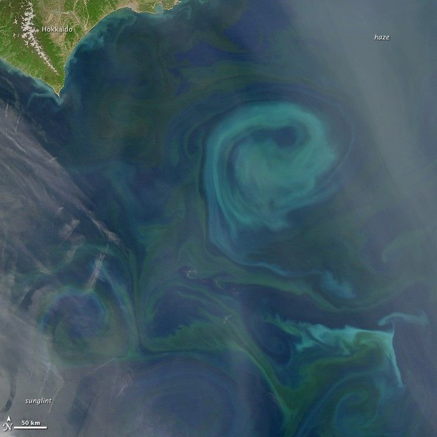

RESEARCH
Methods, and how
they meet the world.
My work connects generative AI, multimodal learning and intelligent systems: how knowledge is organized, how signals are understood, and how models reason in changing environments.
Agents & knowledge
Knowledge in conversation
How can multiple agents share context to help people understand meetings and decisions?
LLMs, RAG and multi-agent collaboration for context, decisions and knowledge organization in meetings.
REPRESENTATIVE WORK
- MC²-Agent · IMP 2025
- Event Level Incremental State Modeling for Long Context Meeting Understanding · IEEE ICCE-TW 2026
Multimodal understanding
Understanding across signals
How can complementary modalities help models build a richer understanding of events?
Connecting vision, language and sound for event recognition, long-form video understanding and educational content.
REPRESENTATIVE WORK
- Vision-Language Augmented Multimodal Framework for Real-Time Violence Recognition · IEEE ICCE-TW 2026
- A Multimodal Learning Approach for Translating Live Lectures into MOOCs Materials · IEEE ICCE-TW 2024
Prediction & intelligent systems
Learning through change
How can systems remain reliable when data distributions and energy conditions change?
Demand forecasting under temporal distribution shift, and sensing and optimization in energy-constrained environments.
REPRESENTATIVE WORK
- DRIFT · Journal of Internet Technology, 2026
- PBEBC · Internet of Things, 2026

INTERDISCIPLINARY PERSPECTIVE
Ocean, history & computation
Experience in historical research and ocean technology projects informs my interest in the relationships between technology, knowledge and its setting. Related work spans maritime history, underwater cultural heritage and underwater bioacoustics.
Related publications ↗